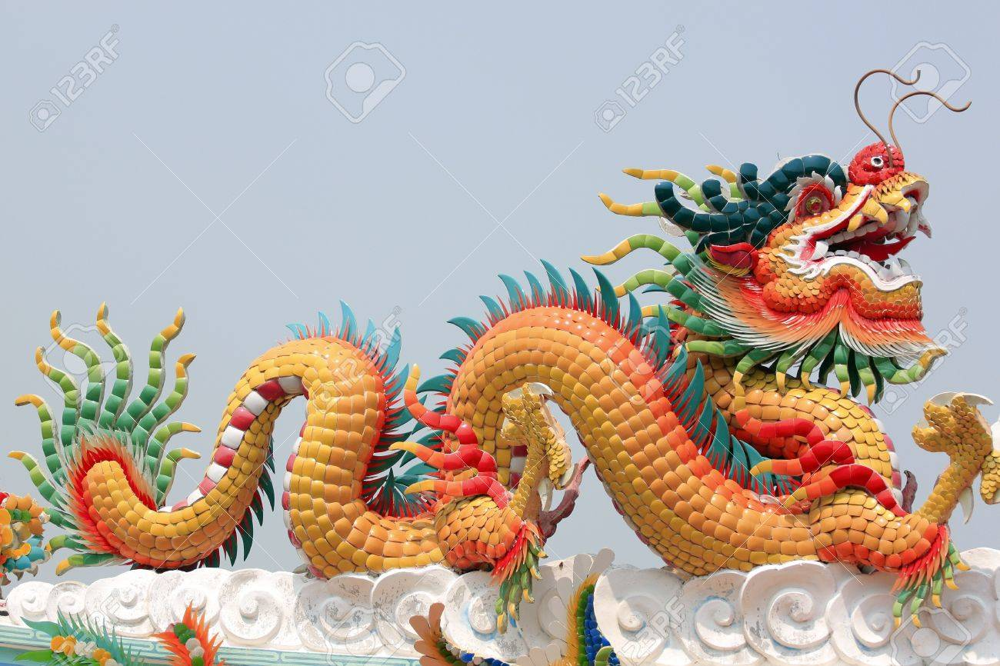
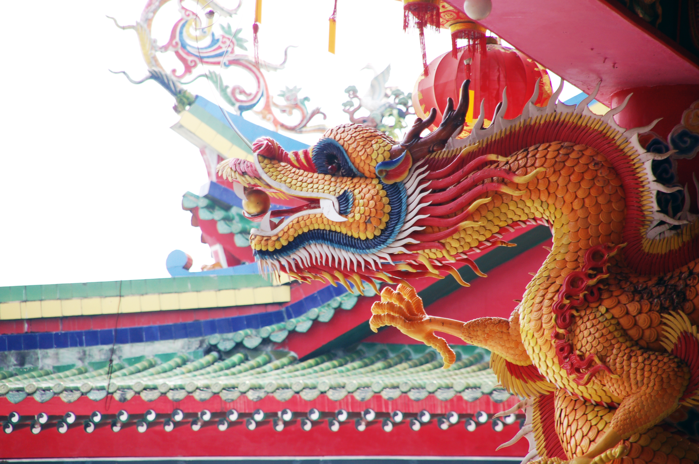
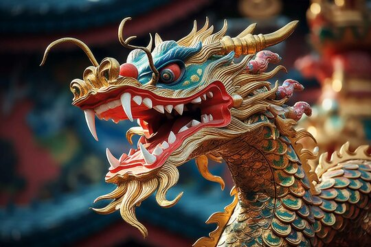

Introducere
Mitologia chineză este o comoară culturală formată de-a lungul mileniilor. Ea cuprinde zei, eroi, creaturi mitice și povești care reflectă valorile și tradițiile unei civilizații antice.
Povești celebre
Descoperă aventurile lui Sun Wukong, povestea tragică a lui Chang'e și simbolistica dragonului chinez. Fiecare legendă oferă o perspectivă unică asupra culturii și spiritualității chineze.
Galerie


